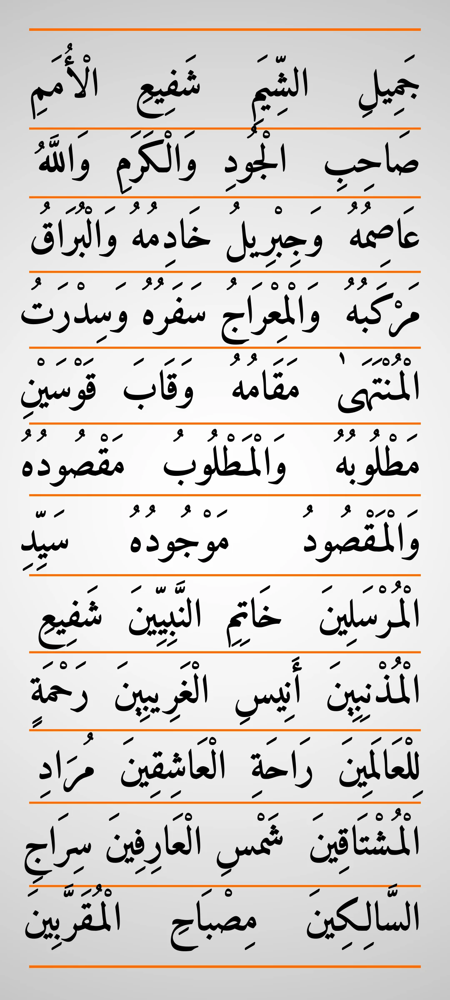
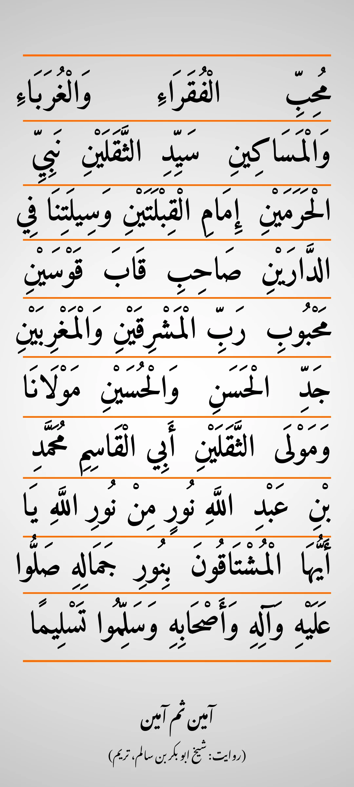

Darood-e-Taj — Poora Text, Tarjuma, Fayde aur Sawab
Darood-e-Taj (درود تاج) kya hai, kis ne likha, poora Arabic text, transliteration, Urdu tarjuma, fayde aur sawab — sab kuch aik jagah.



Darood-e-Taj kya hai?
"Taj" ka matlab hai taaj (crown). Darood-e-Taj Nabi Kareem ﷺ par darood-o-salam bhejne ka aik mashhoor aur muqaddas tareeqa hai. Ye 12 hisso par mushtamil aik lambi salawat hai, jis me Nabi ﷺ ke ausaaf, martabe aur mu'jizat bayan kiye gaye hain. Is ka naam "Taj" is liye pada ke is ke shuru me Nabi ﷺ ko "Sahib-e-Taaj wal-Mi'raj" — taaj aur mi'raj wale — kaha gaya hai. Aaj ye darood duniya bhar ke musalman rozana parhte hain — khaas tor par mushkil waqt, bimari aur hifazat ke liye.
Poora Darood-e-Taj — Arabic, transliteration aur tarjuma
Neeche Darood-e-Taj ka mukammal Arabic text hai — 12 hisse, jaisa aam tor par parha jata hai. Har hisse ke neeche us ki transliteration aur tarjuma diya gaya hai.
1. اللَّهُمَّ صَلِّ عَلَىٰ سَيِّدِنَا وَمَوْلَانَا مُحَمَّدٍ صَاحِبِ التَّاجِ وَالْمِعْرَاجِ وَالْبُرَاقِ وَالْعَلَمِ دَافِعِ الْبَلَاءِ وَالْوَبَاءِ وَالْقَحْطِ وَالْمَرَضِ وَالْأَلَمِ
Allahumma salli 'ala sayyidina wa mawlana Muhammadin sahibit-taji wal-mi'raji wal-buraqi wal-'alami dafi'il-bala'i wal-waba'i wal-qahti wal-maradi wal-alami
Ae Allah! Rehmat nazil farma hamare Aaqa o Maula Muhammad ﷺ par, jo Taaj, Mi'raj, Buraq aur Alam ke malik hain, jo bala, waba, qahat, marz aur dard ko door farmane wale hain.
2. اِسْمُهُ مَكْتُوبٌ مَرْفُوعٌ مَشْفُوعٌ مَنْقُوشٌ فِي اللَّوْحِ وَالْقَلَمِ
Ismuhu maktubun marfu'un mashfu'un manqushun fil-lawhi wal-qalami
Un ka naam Loh-o-Qalam me likha hua, buland, manzoor aur naqsh hai.
3. سَيِّدِ الْعَرَبِ وَالْعَجَمِ جِسْمُهُ مُقَدَّسٌ مُعَطَّرٌ مُطَهَّرٌ مُنَوَّرٌ فِي الْبَيْتِ وَالْحَرَمِ
Sayyidil-'arabi wal-'ajami jismuhu muqaddasun mu'attarun mutahharun munawwarun fil-bayti wal-harami
Woh Arabon aur Ajamiyon ke Sardar hain, un ka jism-e-mubarak muqaddas, khushboodar, pakiza aur munawwar hai Baitullah aur Haram me.
4. شَمْسِ الضُّحَىٰ بَدْرِ الدُّجَىٰ صَدْرِ الْعُلَىٰ نُورِ الْهُدَىٰ كَهْفِ الْوَرَىٰ مِصْبَاحِ الظُّلَمِ
Shamsid-duha badrid-duja sadril-'ula nuril-huda kahfil-wara misbahiz-zulam
Din ke sooraj, tareek raat ke chaand, aali martabon ke sadr, hidayat ke noor, makhlooq ki panahgah aur tareekiyon ke chiragh.
5. جَمِيلِ الشِّيَمِ شَفِيعِ الْأُمَمِ صَاحِبِ الْجُودِ وَالْكَرَمِ
Jamilish-shiyami shafi'il-umami sahibil-judi wal-karami
Khoobsurat akhlaq wale, tamam ummaton ke shafa'at karne wale, jood-o-karam ke malik.
6. وَاللَّهُ عَاصِمُهُ وَجِبْرِيلُ خَادِمُهُ وَالْبُرَاقُ مَرْكَبُهُ وَالْمِعْرَاجُ سَفَرُهُ وَسِدْرَتُ الْمُنْتَهَىٰ مَقَامُهُ وَقَابَ قَوْسَيْنِ مَطْلُوبُهُ وَالْمَطْلُوبُ مَقْصُودُهُ وَالْمَقْصُودُ مَوْجُودُهُ
Wallahu 'asimuhu wa jibrilu khadimuhu wal-buraqu markabuhu wal-mi'raju safaruhu wa sidratul-muntaha maqamuhu wa qaba qawsayni matlubuhu wal-matlubu maqsuduhu wal-maqsudu mawjuduhu
Allah Ta'ala un ka muhafiz, Jibreel (AS) un ke khadim, Buraq un ki sawari, Mi'raj un ka safar, Sidrat-ul-Muntaha un ka maqam, Qab-e-Qawsain un ka matloob, matloob un ka maqsood aur maqsood un ke sath maujood hai.
7. سَيِّدِ الْمُرْسَلِينَ خَاتِمِ النَّبِيِّينَ شَفِيعِ الْمُذْنِبِينَ أَنِيسِ الْغَرِيبِينَ رَحْمَةٍ لِلْعَالَمِينَ
Sayyidil-mursalin khatamin-nabiyyin shafi'il-mudhnibin anisil-gharibin rahmatin lil-'alamin
Tamam Rasoolon ke Sardar, aakhri Nabi, gunahgaron ke shafa'at karne wale, ajnabiyon ke anees, tamam jahanon ke liye rehmat.
8. رَاحَةِ الْعَاشِقِينَ مُرَادِ الْمُشْتَاقِينَ شَمْسِ الْعَارِفِينَ سِرَاجِ السَّالِكِينَ مِصْبَاحِ الْمُقَرَّبِينَ
Rahatil-'ashiqin muradil-mushtaqin shamsil-'arifin sirajis-salikin misbahil-muqarrabin
Aashiqon ki rahat, mushtaqon ki murad, arifon ke sooraj, salikon ke chiragh aur muqarrabon ki roshni.
9. مُحِبِّ الْفُقَرَاءِ وَالْغُرَبَاءِ وَالْمَسَاكِينِ سَيِّدِ الثَّقَلَيْنِ نَبِيِّ الْحَرَمَيْنِ
Muhibbil-fuqara'i wal-ghuraba'i wal-masakin sayyidith-thaqalayn nabiyyil-haramayn
Fuqara, ghuraba aur masakeen ke dost, jinn-o-ins ke Sardar, do Haramon ke Nabi.
10. إِمَامِ الْقِبْلَتَيْنِ وَسِيلَتِنَا فِي الدَّارَيْنِ صَاحِبِ قَابَ قَوْسَيْنِ مَحْبُوبِ رَبِّ الْمَشْرِقَيْنِ وَالْمَغْرِبَيْنِ
Imamil-qiblatayn wasilatina fid-darayn sahibi qaba qawsayn mahbubir-rabbil-mashriqayni wal-maghribayn
Do Qiblon ke Imam, dono jahanon me hamara waseela, Qab-e-Qawsain ke malik, dono mashriqon aur maghribon ke Rab ke mehboob.
11. جَدِّ الْحَسَنِ وَالْحُسَيْنِ مَوْلَانَا وَمَوْلَى الثَّقَلَيْنِ أَبِي الْقَاسِمِ مُحَمَّدِ بْنِ عَبْدِ اللَّهِ
Jaddil-hasani wal-husayn mawlana wa mawlath-thaqalayn abil-Qasimi Muhammadibni 'Abdillah
Hazrat Hasan aur Hazrat Husain (RA) ke nana, hamare Maula aur jinn-o-ins ke Maula, Abu'l-Qasim, Muhammad bin Abdullah ﷺ.
12. نُورٍ مِنْ نُورِ اللَّهِ يَا أَيُّهَا الْمُشْتَاقُونَ بِنُورِ جَمَالِهِ صَلُّوا عَلَيْهِ وَآلِهِ وَأَصْحَابِهِ وَسَلِّمُوا تَسْلِيمًا
Nurin min nurillah, ya ayyuhal-mushtaquna bi nuri jamalihi sallu 'alayhi wa alihi wa ashabihi wa sallimu taslima
Jo Allah ke noor se noor hain. Ae us ke noor-e-jamal ke mushtaqo! Un par, un ki Aal par aur un ke Ashab par darood bhejo aur khoob salam bhejo.
Aakhir me aam tor par آمین ثم آمین kaha jata hai.
Darood-e-Taj ki tareekh (riwayat)
Is darood ke musannif Shaykh Abu Bakr ibn Salim al-Alawi al-Husayni hain — 919 Hijri (1513 CE) me Tarim, Hadhramaut (Yemen) me paida hue, aur Aynat me dafan hain. Un ka laqab "Fakhr al-Wujud" (wujood ka fakhar) tha.
Is darood ki asal shakl do kitabon me milti hai: "Rasaailu Haammah fi'l Ad'iyah" (safha 320) aur "Risaalat-ul-Hajj al-Mabrur" (safha 180). Aaj jo 12 hisso wala nuskha aam hai, use bar-e-saghir ke ulama ne murattab kiya. Buzurgon ke mutabiq ye darood 27 Rajab (Shab-e-Mi'raj) ki raat parhna khaas pasand kiya jata hai, kyunke is me Mi'raj ka zikr hai.
Darood parhne ka sawab
Allah Ta'ala Quran me farmata hai (Surah Al-Ahzab, 33:56):
إِنَّ ٱللَّهَ وَمَلَٰٓئِكَتَهُۥ يُصَلُّونَ عَلَى ٱلنَّبِىِّ يَٰٓأَيُّهَا ٱلَّذِينَ ءَامَنُوا۟ صَلُّوا۟ عَلَيْهِ وَسَلِّمُوا۟ تَسْلِيمًا
"Beshak Allah aur us ke farishte Nabi par darood bhejte hain. Ae iman walo! Tum bhi un par darood bhejo aur khoob salam bhejo."
Nabi ﷺ ne farmaya: "Jo shakhs mujh par aik baar darood bhejta hai, Allah us par das baar rehmat bhejta hai." (Sahih Muslim 408)
Sunan an-Nasa'i 1297 me is ke sath ye bhi hai ke us ke das gunah mita diye jate hain aur us ka darja das darje buland kiya jata hai.
Darood-e-Taj ke fayde
Buzurgon aur kitabon me is darood ke ye fayde bayan kiye gaye hain:
- Dil ki safai aur sakoon — dil naram hota hai aur Allah se talluq mazboot hota hai.
- Rizq me barkat — rozi me kushadgi ki umeed.
- Jadu, jinn aur hasad se hifazat.
- Gham aur museebat se nijaat.
- Bimari me shifa ki dua — parh kar paani par dam karna riwayat me aata hai.
- Khwab me Nabi ﷺ ki ziyarat ki umeed — ye Allah ki ata hai, koi guarantee nahi.
| Maqsad | Wazifa (riwayat ke mutabiq) |
|---|---|
| Dil ki safai | Fajr ke baad 7, Asr ke baad 3, Isha ke baad 3 |
| Rizq me barkat | Tahajjud aur Fajr ke darmiyan 7, ya Fajr ke baad 7 |
| Jadu, jinn, bimari aur museebat se hifazat | Rozana 11 baar |
| Dushman, zulm, hasad, ghurbat aur gham se hifazat | Isha ke baad 41 baar, 40 din tak |
| Kisi khaas hajat ke liye | Isha aur Fajr ke darmiyan 40 baar |
| Khwab me Nabi ﷺ ka deedar | Har Jumu'ah ki raat 170 baar, 40 Jumu'ah ki raatein |
| Bimari se shifa | 11 baar parh kar paani par dam kar ke piyen |
Kab aur kaise parhein?
Kisi bhi waqt parh sakte hain. Behtar ye hai ke wudu kar ke, saaf jagah par, qibla rukh baith kar parhein. Jumu'ah ki raat aur 27 Rajab ki raat ko is ki khaas fazilat bayan ki gayi hai. Rozana aik baar parhna bhi kaafi hai — pabandi hi asal baat hai.
Aam sawal (FAQ)
Darood-e-Taj kis ne likha?
Shaykh Abu Bakr ibn Salim al-Alawi (919–992 Hijri) ne — Tarim, Hadhramaut ke buzurg, laqab "Fakhr al-Wujud".
Kya ye darood hadith se sabit hai?
Nahi — ye kisi hadith ki kitab ka darood nahi, ye aik buzurg ki tasneef hai. Is ki fazilat buzurgon ke tajurbe aur kitabon se bayan ki jati hai. Darood parhne ka asal sawab Quran (33:56) aur sahih hadith (Muslim 408) se sabit hai.
Roz kitni baar parhein?
Koi muqarrar tadad hadith se sabit nahi. Aam tor par 1, 3, 7 ya 11 baar parha jata hai. Wazaif wali tadad buzurgon ke bataye hue tareeqe hain.
Kya is se khwab me Nabi ﷺ ka deedar hota hai?
Riwayat me aata hai ke jo shakhs is darood ko pabandi se parhe, use khwab me Nabi ﷺ ki ziyarat naseeb hoti hai. Ye Allah ki ata hai — koi guarantee nahi.
Sources
Darood-e-Taj ka Arabic text do sources se lafz-ba-lafz verify kiya gaya: chalomasjid.com aur daroodetaj.com; transliteration aur tarjuma sunnah.org aur daroodetaj.com ke mutabiq. Tareekh: knowyourprophetcentre.com aur duasalawat.blogspot.com. Quran 33:56 — Tanzil Uthmani text. Hadith: Sahih Muslim 408, Sunan an-Nasa'i 1297.
What is Darood-e-Taj?
"Taj" means crown. Darood-e-Taj is a famous and blessed way of sending blessings upon the Prophet Muhammad ﷺ. It is a long salawat in 12 parts, describing the Prophet's ﷺ attributes, ranks and miracles. It is called "Taj" because it begins by calling the Prophet ﷺ "Sahib-e-Taaj wal-Mi'raj" — the owner of the Crown and the Ascension. Today, Muslims around the world recite it daily — especially in hardship, illness, and for protection.
The complete Darood-e-Taj — Arabic, transliteration and translation
Below is the complete Arabic text of Darood-e-Taj — 12 parts, as commonly recited. Each part is followed by its transliteration and translation.
1. اللَّهُمَّ صَلِّ عَلَىٰ سَيِّدِنَا وَمَوْلَانَا مُحَمَّدٍ صَاحِبِ التَّاجِ وَالْمِعْرَاجِ وَالْبُرَاقِ وَالْعَلَمِ دَافِعِ الْبَلَاءِ وَالْوَبَاءِ وَالْقَحْطِ وَالْمَرَضِ وَالْأَلَمِ
Allahumma salli 'ala sayyidina wa mawlana Muhammadin sahibit-taji wal-mi'raji wal-buraqi wal-'alami dafi'il-bala'i wal-waba'i wal-qahti wal-maradi wal-alami
O Allah, send blessings upon our Master and Patron Muhammad ﷺ, the owner of the Crown, the Ascension, the Buraq, and the Standard — the repeller of calamity, plague, drought, illness, and pain.
2. اِسْمُهُ مَكْتُوبٌ مَرْفُوعٌ مَشْفُوعٌ مَنْقُوشٌ فِي اللَّوْحِ وَالْقَلَمِ
Ismuhu maktubun marfu'un mashfu'un manqushun fil-lawhi wal-qalami
His name is written, elevated, accepted, and engraved upon the Preserved Tablet and the Pen.
3. سَيِّدِ الْعَرَبِ وَالْعَجَمِ جِسْمُهُ مُقَدَّسٌ مُعَطَّرٌ مُطَهَّرٌ مُنَوَّرٌ فِي الْبَيْتِ وَالْحَرَمِ
Sayyidil-'arabi wal-'ajami jismuhu muqaddasun mu'attarun mutahharun munawwarun fil-bayti wal-harami
Master of Arabs and non-Arabs; his blessed body is sacred, fragrant, purified, and radiant within the House of Allah and the Sacred Sanctuary.
4. شَمْسِ الضُّحَىٰ بَدْرِ الدُّجَىٰ صَدْرِ الْعُلَىٰ نُورِ الْهُدَىٰ كَهْفِ الْوَرَىٰ مِصْبَاحِ الظُّلَمِ
Shamsid-duha badrid-duja sadril-'ula nuril-huda kahfil-wara misbahiz-zulam
The sun of the morning, the full moon of the dark night, foremost of the exalted, the light of guidance, the refuge of all creation, and the lamp of darkness.
5. جَمِيلِ الشِّيَمِ شَفِيعِ الْأُمَمِ صَاحِبِ الْجُودِ وَالْكَرَمِ
Jamilish-shiyami shafi'il-umami sahibil-judi wal-karami
Of beautiful character, the intercessor for all nations, the possessor of generosity and nobility.
6. وَاللَّهُ عَاصِمُهُ وَجِبْرِيلُ خَادِمُهُ وَالْبُرَاقُ مَرْكَبُهُ وَالْمِعْرَاجُ سَفَرُهُ وَسِدْرَتُ الْمُنْتَهَىٰ مَقَامُهُ وَقَابَ قَوْسَيْنِ مَطْلُوبُهُ وَالْمَطْلُوبُ مَقْصُودُهُ وَالْمَقْصُودُ مَوْجُودُهُ
Wallahu 'asimuhu wa jibrilu khadimuhu wal-buraqu markabuhu wal-mi'raju safaruhu wa sidratul-muntaha maqamuhu wa qaba qawsayni matlubuhu wal-matlubu maqsuduhu wal-maqsudu mawjuduhu
Allah is his Protector, Jibreel is his servant, the Buraq is his mount, the Mi'raj is his journey, Sidrat-ul-Muntaha is his station, Qab-e-Qawsain is his desire, the desired is his objective, and the objective is found with him.
7. سَيِّدِ الْمُرْسَلِينَ خَاتِمِ النَّبِيِّينَ شَفِيعِ الْمُذْنِبِينَ أَنِيسِ الْغَرِيبِينَ رَحْمَةٍ لِلْعَالَمِينَ
Sayyidil-mursalin khatamin-nabiyyin shafi'il-mudhnibin anisil-gharibin rahmatin lil-'alamin
Master of all Messengers, Seal of the Prophets, intercessor for sinners, companion of the lonely, Mercy to all the worlds.
8. رَاحَةِ الْعَاشِقِينَ مُرَادِ الْمُشْتَاقِينَ شَمْسِ الْعَارِفِينَ سِرَاجِ السَّالِكِينَ مِصْبَاحِ الْمُقَرَّبِينَ
Rahatil-'ashiqin muradil-mushtaqin shamsil-'arifin sirajis-salikin misbahil-muqarrabin
Solace of those in love, the goal of those in longing, the sun of the mystics, the lamp of the wayfarers, the light of those drawn near to Allah.
9. مُحِبِّ الْفُقَرَاءِ وَالْغُرَبَاءِ وَالْمَسَاكِينِ سَيِّدِ الثَّقَلَيْنِ نَبِيِّ الْحَرَمَيْنِ
Muhibbil-fuqara'i wal-ghuraba'i wal-masakin sayyidith-thaqalayn nabiyyil-haramayn
Lover of the poor, the strangers, and the destitute, Master of humans and jinn, Prophet of the Two Sacred Sanctuaries.
10. إِمَامِ الْقِبْلَتَيْنِ وَسِيلَتِنَا فِي الدَّارَيْنِ صَاحِبِ قَابَ قَوْسَيْنِ مَحْبُوبِ رَبِّ الْمَشْرِقَيْنِ وَالْمَغْرِبَيْنِ
Imamil-qiblatayn wasilatina fid-darayn sahibi qaba qawsayn mahbubir-rabbil-mashriqayni wal-maghribayn
Imam of the Two Qiblas, our means in both worlds, the owner of the station of Qab-e-Qawsain, the Beloved of the Lord of the two Easts and the two Wests.
11. جَدِّ الْحَسَنِ وَالْحُسَيْنِ مَوْلَانَا وَمَوْلَى الثَّقَلَيْنِ أَبِي الْقَاسِمِ مُحَمَّدِ بْنِ عَبْدِ اللَّهِ
Jaddil-hasani wal-husayn mawlana wa mawlath-thaqalayn abil-Qasimi Muhammadibni 'Abdillah
Grandfather of Hasan and Husayn, our Master and Master of humans and jinn, Abu'l-Qasim, Muhammad the son of Abdullah ﷺ.
12. نُورٍ مِنْ نُورِ اللَّهِ يَا أَيُّهَا الْمُشْتَاقُونَ بِنُورِ جَمَالِهِ صَلُّوا عَلَيْهِ وَآلِهِ وَأَصْحَابِهِ وَسَلِّمُوا تَسْلِيمًا
Nurin min nurillah, ya ayyuhal-mushtaquna bi nuri jamalihi sallu 'alayhi wa alihi wa ashabihi wa sallimu taslima
A Light from the Light of Allah. O you who long for the light of his beauty, send blessings upon him, his family and his companions, and send peace in full.
It is commonly closed with آمین ثم آمین (Ameen, thumma Ameen).
History of Darood-e-Taj
Its author is Shaykh Abu Bakr ibn Salim al-Alawi al-Husayni — born in 919 AH (1513 CE) in Tarim, Hadhramaut (Yemen), and buried in Aynat. His title was "Fakhr al-Wujud" (the Pride of Existence).
Its original form is found in two books: "Rasaailu Haammah fi'l Ad'iyah" (p. 320) and "Risaalat-ul-Hajj al-Mabrur" (p. 180). The 12-part version recited today was arranged by later scholars of the Indian subcontinent. According to the elders, reciting it on the night of 27 Rajab (the Night of Mi'raj) is especially beloved, because it mentions the Mi'raj.
The reward of sending blessings
Allah says in the Quran (Surah Al-Ahzab, 33:56):
إِنَّ ٱللَّهَ وَمَلَٰٓئِكَتَهُۥ يُصَلُّونَ عَلَى ٱلنَّبِىِّ يَٰٓأَيُّهَا ٱلَّذِينَ ءَامَنُوا۟ صَلُّوا۟ عَلَيْهِ وَسَلِّمُوا۟ تَسْلِيمًا
"Indeed, Allah and His angels send blessings upon the Prophet. O you who believe, send blessings upon him and greet him with peace."
The Prophet ﷺ said: "Whoever sends blessings upon me once, Allah will send blessings upon him ten times." (Sahih Muslim 408)
Sunan an-Nasa'i 1297 adds that ten of his sins are erased and he is raised ten degrees.
Benefits of Darood-e-Taj
The elders and books mention these benefits:
- Purification of the heart and peace — the heart softens and the bond with Allah grows stronger.
- Blessing in provision (rizq).
- Protection from magic, jinn and envy.
- Relief from grief and calamity.
- A prayer for healing in illness — reciting it and blowing upon water is narrated in tradition.
- Hope of seeing the Prophet ﷺ in a dream — a gift from Allah, never a guarantee.
| Purpose | Wazifa (as narrated in tradition) |
|---|---|
| Purification of the heart | 7 times after Fajr, 3 after Asr, 3 after Isha |
| Blessing in provision | 7 times between Tahajjud and Fajr, or 7 after Fajr |
| Protection from magic, jinn, illness and calamity | 11 times daily |
| Protection from enemies, oppression, envy, poverty and grief | 41 times after Isha, for 40 days |
| For a specific need | 40 times between Isha and Fajr |
| Seeing the Prophet ﷺ in a dream | 170 times every Thursday night, for 40 Thursday nights |
| Healing from illness | Recite 11 times, blow upon water and drink it |
When and how to recite it?
It can be recited at any time. Best is to be in wudu, in a clean place, facing the Qibla. Thursday night and the night of 27 Rajab carry special mention. Reciting it once daily is enough — consistency is what matters.
Common questions (FAQ)
Who wrote Darood-e-Taj?
Shaykh Abu Bakr ibn Salim al-Alawi (919–992 AH) — an elder of Tarim, Hadhramaut, titled "Fakhr al-Wujud".
Is this darood established by hadith?
No — it is not a darood from a hadith book; it is the composition of an elder. Its virtues are mentioned from the experience of elders and books. The reward of sending blessings itself is established by the Quran (33:56) and sahih hadith (Muslim 408).
How many times should I recite it daily?
No fixed number is established by hadith. Commonly it is recited 1, 3, 7 or 11 times. The counts in wazaif are methods taught by elders.
Does it let you see the Prophet ﷺ in a dream?
Tradition says that whoever recites it regularly may be blessed with a vision of the Prophet ﷺ in a dream. That is Allah's gift — never a guarantee.
Sources
The Arabic text was verified word-by-word against two sources: chalomasjid.com and daroodetaj.com; transliteration and translation follow sunnah.org and daroodetaj.com. History: knowyourprophetcentre.com and duasalawat.blogspot.com. Quran 33:56 — Tanzil Uthmani text. Hadith: Sahih Muslim 408, Sunan an-Nasa'i 1297.
درودِ تاج کیا ہے؟
”تاج“ کا مطلب ہے تاج (crown)۔ درودِ تاج نبی کریم ﷺ پر درود و سلام بھیجنے کا ایک مشہور اور مبارک طریقہ ہے۔ یہ ۱۲ حصوں پر مشتمل ایک طویل صلوٰۃ ہے، جس میں نبی ﷺ کے اوصاف، مراتب اور معجزات بیان کیے گئے ہیں۔ اس کا نام ”تاج“ اس لیے پڑا کہ اس کے شروع میں نبی ﷺ کو ”صاحبِ تاج والمعراج“ — تاج اور معراج والے — کہا گیا ہے۔ آج یہ درود دنیا بھر کے مسلمان روزانہ پڑھتے ہیں — خاص طور پر مشکل وقت، بیماری اور حفاظت کے لیے۔
مکمل درودِ تاج — عربی اور ترجمہ
نیچے درودِ تاج کا مکمل عربی متن ہے — ۱۲ حصے، جیسا عام طور پر پڑھا جاتا ہے۔ ہر حصے کے نیچے اس کا ترجمہ دیا گیا ہے۔
1. اللَّهُمَّ صَلِّ عَلَىٰ سَيِّدِنَا وَمَوْلَانَا مُحَمَّدٍ صَاحِبِ التَّاجِ وَالْمِعْرَاجِ وَالْبُرَاقِ وَالْعَلَمِ دَافِعِ الْبَلَاءِ وَالْوَبَاءِ وَالْقَحْطِ وَالْمَرَضِ وَالْأَلَمِ
اے اللہ! رحمت نازل فرما ہمارے آقا و مولا محمد ﷺ پر، جو تاج، معراج، براق اور علم کے مالک ہیں، جو بلاء، وبا، قحط، مرض اور درد کو دور فرمانے والے ہیں۔
2. اِسْمُهُ مَكْتُوبٌ مَرْفُوعٌ مَشْفُوعٌ مَنْقُوشٌ فِي اللَّوْحِ وَالْقَلَمِ
ان کا نام لوح و قلم میں لکھا ہوا، بلند، منظور اور نقش ہے۔
3. سَيِّدِ الْعَرَبِ وَالْعَجَمِ جِسْمُهُ مُقَدَّسٌ مُعَطَّرٌ مُطَهَّرٌ مُنَوَّرٌ فِي الْبَيْتِ وَالْحَرَمِ
وہ عربوں اور عجمیوں کے سردار ہیں، ان کا جسمِ مبارک مقدس، خوشبودار، پاکیزہ اور منور ہے بیت اللہ اور حرم میں۔
4. شَمْسِ الضُّحَىٰ بَدْرِ الدُّجَىٰ صَدْرِ الْعُلَىٰ نُورِ الْهُدَىٰ كَهْفِ الْوَرَىٰ مِصْبَاحِ الظُّلَمِ
دن کے سورج، تاریک رات کے چاند، عالی مرتبوں کے صدر، ہدایت کے نور، مخلوق کی پناہ گاہ اور تاریکیوں کے چراغ۔
5. جَمِيلِ الشِّيَمِ شَفِيعِ الْأُمَمِ صَاحِبِ الْجُودِ وَالْكَرَمِ
خوبصورت اخلاق والے، تمام امتوں کے شفاعت کرنے والے، جود و کرم کے مالک۔
6. وَاللَّهُ عَاصِمُهُ وَجِبْرِيلُ خَادِمُهُ وَالْبُرَاقُ مَرْكَبُهُ وَالْمِعْرَاجُ سَفَرُهُ وَسِدْرَتُ الْمُنْتَهَىٰ مَقَامُهُ وَقَابَ قَوْسَيْنِ مَطْلُوبُهُ وَالْمَطْلُوبُ مَقْصُودُهُ وَالْمَقْصُودُ مَوْجُودُهُ
اللہ تعالیٰ ان کا محافظ، جبرائیل علیہ السلام ان کے خادم، براق ان کی سواری، معراج ان کا سفر، سدرۃ المنتہیٰ ان کا مقام، قابَ قوسین ان کا مطلوب، مطلوب ان کا مقصود اور مقصود ان کے ساتھ موجود ہے۔
7. سَيِّدِ الْمُرْسَلِينَ خَاتِمِ النَّبِيِّينَ شَفِيعِ الْمُذْنِبِينَ أَنِيسِ الْغَرِيبِينَ رَحْمَةٍ لِلْعَالَمِينَ
تمام رسولوں کے سردار، آخری نبی، گناہ گاروں کے شفاعت کرنے والے، اجنبیوں کے انیس، تمام جہانوں کے لیے رحمت۔
8. رَاحَةِ الْعَاشِقِينَ مُرَادِ الْمُشْتَاقِينَ شَمْسِ الْعَارِفِينَ سِرَاجِ السَّالِكِينَ مِصْبَاحِ الْمُقَرَّبِينَ
عاشقوں کی راحت، مشتاقوں کی مراد، عارفوں کے سورج، سالکوں کے چراغ اور مقربوں کی روشنی۔
9. مُحِبِّ الْفُقَرَاءِ وَالْغُرَبَاءِ وَالْمَسَاكِينِ سَيِّدِ الثَّقَلَيْنِ نَبِيِّ الْحَرَمَيْنِ
فقراء، غرباء اور مساکین کے دوست، جن و انس کے سردار، دو حرموں کے نبی۔
10. إِمَامِ الْقِبْلَتَيْنِ وَسِيلَتِنَا فِي الدَّارَيْنِ صَاحِبِ قَابَ قَوْسَيْنِ مَحْبُوبِ رَبِّ الْمَشْرِقَيْنِ وَالْمَغْرِبَيْنِ
دو قبلوں کے امام، دونوں جہانوں میں ہمارا وسیلہ، قابَ قوسین کے مالک، دونوں مشرقوں اور مغربوں کے رب کے محبوب۔
11. جَدِّ الْحَسَنِ وَالْحُسَيْنِ مَوْلَانَا وَمَوْلَى الثَّقَلَيْنِ أَبِي الْقَاسِمِ مُحَمَّدِ بْنِ عَبْدِ اللَّهِ
حضرت حسن اور حضرت حسین رضی اللہ عنہما کے نانا، ہمارے مولا اور جن و انس کے مولا، ابو القاسم، محمد بن عبداللہ ﷺ۔
12. نُورٍ مِنْ نُورِ اللَّهِ يَا أَيُّهَا الْمُشْتَاقُونَ بِنُورِ جَمَالِهِ صَلُّوا عَلَيْهِ وَآلِهِ وَأَصْحَابِهِ وَسَلِّمُوا تَسْلِيمًا
جو اللہ کے نور سے نور ہیں۔ اے اس کے نورِ جمال کے مشتاقو! ان پر، ان کی آل پر اور ان کے اصحاب پر درود بھیجو اور خوب سلام بھیجو۔
آخر میں عام طور پر آمین ثم آمین کہا جاتا ہے۔
درودِ تاج کی تاریخ (روایت)
اس درود کے مصنف شیخ ابوبکر بن سالم العلوی الحسینی ہیں — ۹۱۹ ہجری (۱۵۱۳ عیسوی) میں تریم، حضرموت (یمن) میں پیدا ہوئے، اور عینات میں دفن ہیں۔ ان کا لقب ”فخر الوجود“ (وجود کا فخر) تھا۔
اس درود کی اصل شکل دو کتابوں میں ملتی ہے: ”رسائل ہامہ فی الادعیہ“ (صفحہ ۳۲۰) اور ”رسالۃ الحج المبرور“ (صفحہ ۱۸۰)۔ آج جو ۱۲ حصوں والا نسخہ عام ہے، اسے برِصغیر کے علما نے مرتب کیا۔ بزرگوں کے مطابق یہ درود ۲۷ رجب (شبِ معراج) کی رات پڑھنا خاص پسند کیا جاتا ہے، کیونکہ اس میں معراج کا ذکر ہے۔
درود پڑھنے کا ثواب
اللہ تعالیٰ قرآن میں فرماتا ہے (سورۃ الاحزاب، ۳۳:۵۶):
إِنَّ ٱللَّهَ وَمَلَٰٓئِكَتَهُۥ يُصَلُّونَ عَلَى ٱلنَّبِىِّ يَٰٓأَيُّهَا ٱلَّذِينَ ءَامَنُوا۟ صَلُّوا۟ عَلَيْهِ وَسَلِّمُوا۟ تَسْلِيمًا
”بے شک اللہ اور اس کے فرشتے نبی پر درود بھیجتے ہیں۔ اے ایمان والو! تم بھی ان پر درود بھیجو اور خوب سلام بھیجو۔“
نبی ﷺ نے فرمایا: ”جو شخص مجھ پر ایک بار درود بھیجتا ہے، اللہ اس پر دس بار رحمت بھیجتا ہے۔“ (صحیح مسلم ۴۰۸)
سنن النسائی ۱۲۹۷ میں اس کے ساتھ یہ بھی ہے کہ اس کے دس گناہ مٹا دیے جاتے ہیں اور اس کا درجہ دس درجے بلند کیا جاتا ہے۔
درودِ تاج کے فائدے
بزرگوں اور کتابوں میں اس درود کے یہ فائدے بیان کیے گئے ہیں:
- دل کی صفائی اور سکون — دل نرم ہوتا ہے اور اللہ سے تعلق مضبوط ہوتا ہے۔
- رزق میں برکت۔
- جادو، جنات اور حسد سے حفاظت۔
- غم اور مصیبت سے نجات۔
- بیماری میں شفا کی دعا — پڑھ کر پانی پر دم کرنا روایت میں آتا ہے۔
- خواب میں نبی ﷺ کی زیارت کی امید — یہ اللہ کی عطا ہے، کوئی گارنٹی نہیں۔
| مقصد | وظیفہ (روایت کے مطابق) |
|---|---|
| دل کی صفائی | فجر کے بعد ۷، عصر کے بعد ۳، عشاء کے بعد ۳ |
| رزق میں برکت | تہجد اور فجر کے درمیان ۷، یا فجر کے بعد ۷ |
| جادو، جنات، بیماری اور مصیبت سے حفاظت | روزانہ ۱۱ بار |
| دشمن، ظلم، حسد، غربت اور غم سے حفاظت | عشاء کے بعد ۴۱ بار، ۴۰ دن تک |
| کسی خاص حاجت کے لیے | عشاء اور فجر کے درمیان ۴۰ بار |
| خواب میں نبی ﷺ کا دیدار | ہر جمعہ کی رات ۱۷۰ بار، ۴۰ جمعہ کی راتیں |
| بیماری سے شفا | ۱۱ بار پڑھ کر پانی پر دم کر کے پئیں |
کب اور کیسے پڑھیں؟
کسی بھی وقت پڑھ سکتے ہیں۔ بہتر یہ ہے کہ وضو کر کے، صاف جگہ پر، قبلہ رخ بیٹھ کر پڑھیں۔ جمعہ کی رات اور ۲۷ رجب کی رات کو اس کی خاص فضیلت بیان کی گئی ہے۔ روزانہ ایک بار پڑھنا بھی کافی ہے — پابندی ہی اصل بات ہے۔
عام سوالات
درودِ تاج کس نے لکھا؟
شیخ ابوبکر بن سالم العلوی (۹۱۹–۹۹۲ ہجری) نے — تریم، حضرموت کے بزرگ، لقب ”فخر الوجود“۔
کیا یہ درود حدیث سے ثابت ہے؟
نہیں — یہ کسی حدیث کی کتاب کا درود نہیں، یہ ایک بزرگ کی تصنیف ہے۔ اس کی فضیلت بزرگوں کے تجربے اور کتابوں سے بیان کی جاتی ہے۔ درود پڑھنے کا اصل ثواب قرآن (۳۳:۵۶) اور صحیح حدیث (مسلم ۴۰۸) سے ثابت ہے۔
روز کتنی بار پڑھیں؟
کوئی مقرر تعداد حدیث سے ثابت نہیں۔ عام طور پر ۱، ۳، ۷ یا ۱۱ بار پڑھا جاتا ہے۔ وظائف والی تعداد بزرگوں کے بتائے ہوئے طریقے ہیں۔
کیا اس سے خواب میں نبی ﷺ کا دیدار ہوتا ہے؟
روایت میں آتا ہے کہ جو شخص اس درود کو پابندی سے پڑھے، اسے خواب میں نبی ﷺ کی زیارت نصیب ہوتی ہے۔ یہ اللہ کی عطا ہے — کوئی گارنٹی نہیں۔
مصادر
درودِ تاج کا عربی متن دو مصادر سے لفظ بہ لفظ verify کیا گیا: chalomasjid.com اور daroodetaj.com؛ transliteration اور ترجمہ sunnah.org اور daroodetaj.com کے مطابق۔ تاریخ: knowyourprophetcentre.com اور duasalawat.blogspot.com۔ قرآن ۳۳:۵۶ — تنزیل عثمانی متن۔ حدیث: صحیح مسلم ۴۰۸، سنن النسائی ۱۲۹۷۔